東京大学 2003年 理科 第4問
問題
2次方程式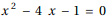の2つの実数解のうち大きいものをα、小さいものをβとする。
n=1,2,3,...に対し、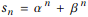とおく。
(1) 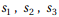を求めよ。また、n≥3に対し、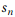を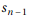と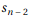で表わせ。
(2) 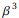以下の最大の整数を求めよ。
(3)  以下の最大の整数の1の位の数を求めよ。
以下の最大の整数の1の位の数を求めよ。
解答
(1)
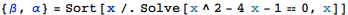
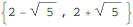
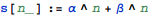
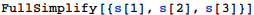
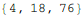
元の方程式にαとβを代入して足すと下記の式が得られる。FullSimplifyで成立を確認。
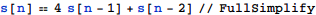
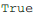
(2)
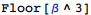
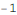
(3)
桁数を見積もる
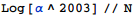
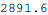
多めに精度を確保して1の位を求める
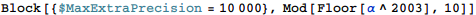
(3) 別解
 の1の位を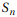とする。
の1の位を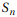とする。
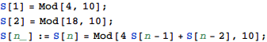
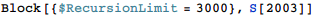

 であり、nが奇数のとき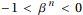だから、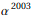の整数部分の1の位は6。
であり、nが奇数のとき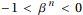だから、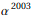の整数部分の1の位は6。
補足・感想
具体的なα,βの値を使ってゴリ押し。